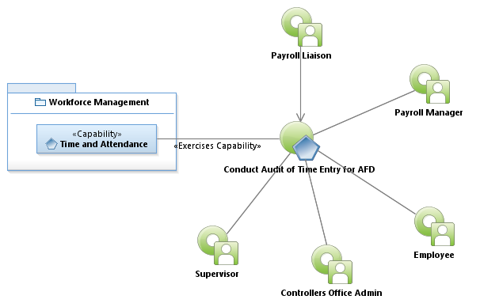
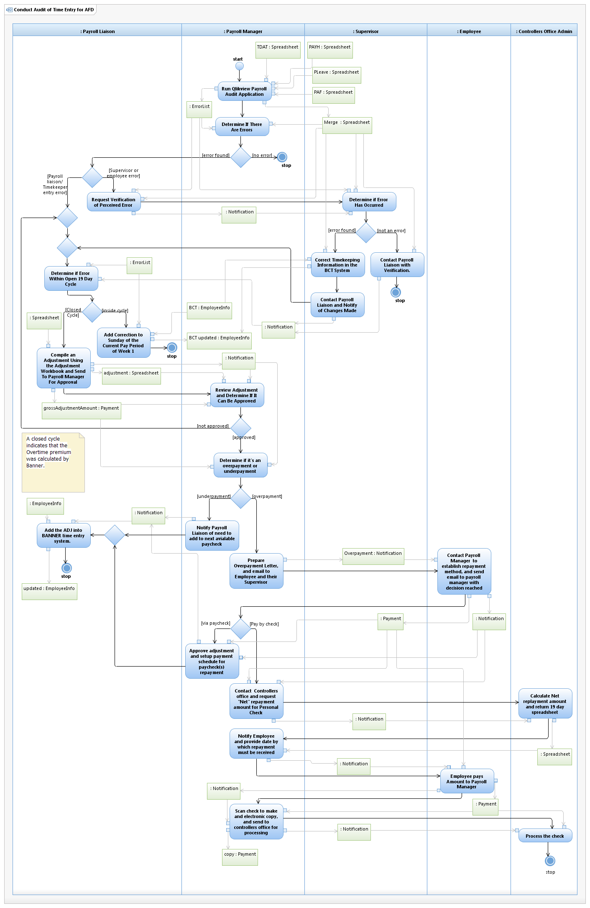

Use Case Model: Conduct Audit of Time Entry for AFD
Architect: Aaron Brown, IT Enterprise Architect, Senior
Date Last Modified: 04/10/2013
User Review: Carlyn Cheney
Date: 04/10/2013
Audit comparison of Banner time entry to BCT Timekeeping and/or timesheets to determine payroll anomalies, and correct issues.
Follow link to Role Definitions

Use Case Model: Conduct Audit of Time Entry for AFD

Activity Model: Conduct Audit of Time Entry for AFD